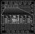
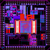
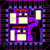
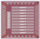
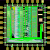

<!DOCTYPE html PUBLIC "-//W3C//DTD XHTML 1.0 Transitional//EN" "http://www.w3.org/TR/xhtml1/DTD/xhtml1-transitional.dtd">
<html>
<head>
	<title>Joseph Crop - Publications </title>
	<meta http-equiv='Content-Style-Type' content='text/css' />
	<!--HTMLHeader--><style type='text/css'><!--
  ul, ol, pre, dl, p { margin-top:0px; margin-bottom:0px; }
  code.escaped { white-space: pre; }
  .vspace { margin-top:1.33em; }
  .indent { margin-left:40px; }
  .outdent { margin-left:40px; text-indent:-40px; }
  a.createlinktext { text-decoration:none; border-bottom:1px dotted gray; }
  a.createlink { text-decoration:none; position:relative; top:-0.5em;
    font-weight:bold; font-size:smaller; border-bottom:none; }
  img { border:0px; }
  .TCprogress {background-color:#5af; min-height:13px; width:13px; color:#fff; margin-left:auto; margin-right:auto;}
table.TotalCounter td {font-size:x-small; text-align:center}.editconflict { color:green; 
  font-style:italic; margin-top:1.33em; margin-bottom:1.33em; }

  table.markup { border:2px dotted #ccf; width:90%; }
  td.markup1, td.markup2 { padding-left:10px; padding-right:10px; }
  table.vert td.markup1 { border-bottom:1px solid #ccf; }
  table.horiz td.markup1 { width:23em; border-right:1px solid #ccf; }
  table.markup caption { text-align:left; }
  div.faq p, div.faq pre { margin-left:2em; }
  div.faq p.question { margin:1em 0 0.75em 0; font-weight:bold; }
  div.faqtoc div.faq * { display:none; }
  div.faqtoc div.faq p.question 
    { display:block; font-weight:normal; margin:0.5em 0 0.5em 20px; line-height:normal; }
  div.faqtoc div.faq p.question * { display:inline; }
  td.markup1 pre { white-space: pre-wrap; }
   
    .frame 
      { border:1px solid #cccccc; padding:4px; background-color:#f9f9f9; }
    .lfloat { float:left; margin-right:0.5em; }
    .rfloat { float:right; margin-left:0.5em; }
a.varlink { text-decoration:none;}

--></style>  <meta name='robots' content='noindex,nofollow' />

	<link rel='stylesheet' href='../_fpub/skins/simpletab/pmwiki.css' type='text/css' />
	<style type='text/css'><!--
	#header {background-color: #950;}
	a:link, a:visited, #menu ul li .here a, #menu ul li .here a:hover {color: #950;}
	--></style>
	<!--[if lte IE 6]>
	<style type="text/css">
	img, #logo, #vis, #header { behavior: url("../_fpub/skins/simpletab/iepngfix.htc"); }
	</style>
	<![endif]-->
</head>
<body>
	<div id="main" style="position:absolute; top:20px; left:5px; z-index:101;">
		<div class="image" style="width:94px;display:inline;"> 
			<a href=".."></img></a>
		</div>
		<div class="image" style="width:50px;display:inline;"> 
			</img>
		</div>
		<div class="image" style="width:50px;display:inline;"> 
			</img>
		</div>
		<div class="image" style="width:50px;display:inline;"> 
			</img>
		</div>
		<div class="image" style="width:50px;display:inline;"> 
			</img>
		</div>
		<div class="image" style="width:50px;display:inline;"> 
			</img>
		</div>
		<div class="image" style="width:40px;display:inline;"> 
			</img>
		</div>
	</div>
	<div id="canvas"></div>

	<div id="page">
		<div id="suptitle"></div>
		<div id="header" >
			<div id="vis">
				<!-- <a id="logo" href=".." title="Joseph Crop"></a> -->
				<div id="menu"><ul><li> <a class='wikilink' href='../Main/HomePage.html'>Home</a>
</li><li> <a class='wikilink' href='../Teaching/Teaching.html'>Teaching</a>
</li><li> <a class='wikilink' href='../Resume/Objective.html'>R&eacute;sum&eacute;</a>
</li><li> <span class='here'>  <a class='selflink' href='../Publications/Publications.html'>Publications</a></span>
</li><li> <a class='wikilink' href='../Teaching/Projects.html'>Projects</a>
</li><li> <a class='wikilink' href='../Music/Music.html'>Music</a>
</li><li> <a class='wikilink' href='../Pictures/Pictures.html'>Pictures</a>
</li><li> <a class='wikilink' href='../Contact/Contact.html'>Contact</a>
</li></ul>
</div>
			</div>
		</div>
	<div id="tools">
	    <a rel="nofollow" accesskey='e' href='../Publications/Publications.html?action=edit'></a>
	    <a rel="nofollow" accesskey='h' href='../Publications/Publications.html?action=diff'></a>      
	    <a rel="nofollow" accesskey='a' href='../Publications/Publications.html?action=upload'></a>      
	    <a rel="nofollow" accesskey='c' href='../Publications/RecentChanges'></a>      
	    <a rel="nofollow" accesskey='r' href='../Site/AllRecentChanges]'></a>
	    <a rel="nofollow" accesskey='l' href='../Publications/SideBar?action=edit'></a>
			<a rel="nofollow" accesskey='t' href='../Site/TopBar?action=edit'></a>
			<a rel="nofollow" accesskey='m' href='../Site/TabMenu?action=edit'></a>
			<a rel="nofollow" accesskey='f' href='../Site/Footer?action=edit'></a>
	</div>

	<div id="sidebar"><div class='vspace'></div><div class='frame' > 
<h2> <a class='wikilink' href='../Main/HomePage.html'>Home</a></h2>
<h2> <a class='wikilink' href='../Teaching/Teaching.html'>Teaching</a></h2>
<h2> <a class='wikilink' href='../Resume/Objective.html'>R&eacute;sum&eacute;</a></h2>
<h2> <span  style='text-decoration: underline; color: #995500;'>  <a style='color: #995500' class='selflink' href='../Publications/Publications.html'>Publications</a></span></h2>
<div class='indent'> <a class='wikilink' href='../Publications/Images.html'>Images</a>
</div><h2> <a class='wikilink' href='../Chips/Chips.html'>Chips</a></h2>
<h2> <a class='wikilink' href='../Teaching/Projects.html'>Projects</a></h2>
<h2> <a class='wikilink' href='../Music/Music.html'>Music</a></h2>
<h2> <a class='wikilink' href='../Pictures/Pictures.html'>Pictures</a></h2>
<h2> <a class='wikilink' href='../Contact/Contact.html'>Contact</a></h2>
<h2> <a class='wikilink' href='../Links/Links.html'>Links</a></h2>
<h2> <a class='wikilink' href='../Site/Search.html'>Search</a></h2>
</div>
<div class='vspace'></div><div class='frame' > 
<h3>Class Projects</h3>
<div class='indent'><a class='wikilink' href='../Classes/ECE521.html'>ECE 521 - joeSpice</a>
</div><div class='indent'><a class='wikilink' href='../Classes/ECE570.html'>ECE 570</a>
</div><div class='indent'><a class='wikilink' href='../Classes/ECE577.html'>ECE 577</a>
</div><h3>Tools</h3>
<div class='indent'><a class='wikilink' href='../Tools/VIM8VerilogSetup.html'>VIM 8.0 Setup for Verilog</a>
</div><div class='indent'><a class='wikilink' href='../Tools/SpiceMeasureParser.html'>Spice Measure File Parser</a>
</div><div class='indent'><a class='wikilink' href='../Tools/GoogleDocsSchematic.html'>Google Docs Circuits</a>
</div><div class='indent'><a class='wikilink' href='../Tools/OpenCores.html'>OpenCores.org Peojects</a>
</div><div class='indent'><a class='wikilink' href='../Tools/CellCulling.html'>Cell Culling Toolkit</a>
</div></div>
</div>
	
	<div id="content"><!--PageText-->
<div id='wikitext'>
<h1>Publications</h1>
<div class='frame' > 
<div class='vspace'></div><ul><li>B. Querbach, R. Khanna, S. Puligundla, D. Blankenbeckler, J. Crop, P. Chiang, "Architecture of a Reusable BIST Engine for Detection and Auto Correction of Memory failures and for IO debug, validation, link  training, and power optimization on 14nm 3DS SOC," IEEE Design and Test Journal (Accepted)
<div class='vspace'></div></li><li><a class='urllink' href='http://ieeexplore.ieee.org/xpl/articleDetails.jsp?arnumber=6946138' rel='nofollow'>R Pawlowski, J. Crop, M. Cho, J. Tschanz, V. De, T. Fairbanks, H. Quinn, S. Borkar, P.Y. Chiang, "Characterization of radiation-induced SRAM and logic soft errors from 0.33V to 1.0V in 65nm CMOS," Custom Integrated Circuits Conference (CICC), 2014</a>
<div class='vspace'></div></li><li>E. Krimer, J. Crop, M. Erez, and P. Chiang, "Replication-Free Single-Event Transient (SET) Detection for Eliminating Silent Data Corruption in CMOS Logic," Silicon Errors in Logic - System Effects (SELSE-9), Stanford University, March 2013
<div class='vspace'></div></li><li><a class='urllink' href='http://ieeexplore.ieee.org/xpl/articleDetails.jsp?tp=&amp;arnumber=6241622&amp;contentType=Conference+Publications' rel='nofollow'>J. Crop, R. Pawlowski, and P. Chiang, "Regaining Throughput Using Completion Detection for Error-Resilient, Near-Threshold Logic", Design Automation Conference (DAC), June 2012</a>
<div class='vspace'></div></li><li><a class='urllink' href='http://ieeexplore.ieee.org/xpl/articleDetails.jsp?tp=&amp;arnumber=6271940&amp;contentType=Conference+Publications' rel='nofollow'>Chen, C-H; Crop, J; Chiang, P; Temes, G; , "A 12-Bit 7 µW/Channel 1 Khz/Channel Incremental ADC for Biosensor Interface Circuits" ISCAS 2012</a>
<div class='vspace'></div></li><li><a class='urllink' href='http://ieeexplore.ieee.org/xpl/articleDetails.jsp?tp=&amp;arnumber=6177105' rel='nofollow'>Pawlowski, R; Krimer, E.; Crop, J; Postman, J; Chiang, P.; Erez, M.; , "A 530mV 10-lane SIMD processor with variation resiliency in 45nm SOI" ISSCC 2012</a>
<div class='vspace'></div></li><li><a class='urllink' href='http://ieeexplore.ieee.org/xpl/articleDetails.jsp?tp=&amp;arnumber=6157326' rel='nofollow'>Xiao, M; Xiang, S; Wang, J; Crop ,J; , "Design of a UHF RFID Tag Baseband with the Hummingbird Cryptographic Engine" ASICON 2011</a>
<div class='vspace'></div></li><li><a class='urllink' href='http://www.mdpi.com/2079-9268/1/3/334/' rel='nofollow'>Crop, J.; Krimer, E.; Moezzi-Madani, N.; Pawlowski, R.; Ruggeri, T.; Chiang, P.; Erez, M.; , "Error Detection and Recovery Techniques for Variation-Aware CMOS Computing: A Comprehensive Review." J. Low Power Electron. Appl. 2011, 1, 334-356.</a>
<div class='vspace'></div></li><li><a class='urllink' href='http://ieeexplore.ieee.org/xpls/abs_all.jsp?arnumber=6008604' rel='nofollow'>Crop, J.; Pawlowski, R.; Moezzi-Madani, N.; Jackson, J.; Chaing, P.; , "Design automation methodology for improving the variability of synthesized digital circuits operating in the sub/near-threshold regime," Green Computing Conference and Workshops (IGCC), 2011 International , vol., no., pp.1-6, 25-28 July 2011</a>
<div class='vspace'></div></li><li><a class='urllink' href='http://ieeexplore.ieee.org/xpls/abs_all.jsp?arnumber=5763050' rel='nofollow'>Moezzi-Madani, N.; Thorolfsson, T.; Crop, J.; Chiang, P.; Davis, W.R.; , "An energy-efficient 64-QAM MIMO detector for emerging wireless standards," Design, Automation &amp; Test in Europe Conference &amp; Exhibition (DATE), 2011 , vol., no., pp.1-6, 14-18 March 2011</a>
<div class='vspace'></div></li><li><a class='urllink' href='http://ieeexplore.ieee.org/xpls/abs_all.jsp?arnumber=5496737' rel='nofollow'>Crop, J.; Fairbanks, S.; Pawlowski, R.; Chiang, P.; , "150mV sub-threshold Asynchronous multiplier for low-power sensor applications," VLSI Design Automation and Test (VLSI-DAT), 2010 International Symposium on , vol., no., pp.254-257, 26-29 April 2010</a>
</li></ul><div class='vspace'></div></div>
<div class='vspace'></div><h1>Presentations</h1>
<div class='frame' > 
<div class='vspace'></div><ul><li>J. Crop, R. Pawlowski, "Radiation Induced Soft-Errors @ NTV," DARPA Circuits for Resilient Systems Meeting, Intel Corporation, Hillsboro, OR, June 2013
<div class='vspace'></div></li><li><a class='urllink' href='../_uploads/Publications/RegainingThroughputDAC.pptx' rel='nofollow'>J. Crop, "Regaining Throughput Using Completion Detection for Error-Resilient, Near-Threshold Logic," Design Automation Conference (DAC), 2012</a>
<div class='vspace'></div></li><li><a class='urllink' href='../_uploads/Publications/FudanEnglishPresentation2011.pdf' rel='nofollow'>J. Crop, "Writing English Publications," Fudan University, Shanghai China, August 2011</a>
<div class='vspace'></div></li><li><a class='urllink' href='../_uploads/Publications/IGCC2011_Presentation.pdf' rel='nofollow'>J. Crop, "Design Automation Methodology for Improving the Variability of Synthesized Digital Circuits Operating in the Sub/Near-Threshold Regime," International Green Computing Conference (IGCC'11), Orlando, Florida, USA, July 2011</a>
<div class='vspace'></div></li><li>J. Crop, "Fully Automated Digital Synthesis and Place and Route," Visiting Student Seminar, Fudan University, Shanghai China, June 2011
<div class='vspace'></div></li><li><a class='urllink' href='../_uploads/Publications/FudanPresentation2011.pdf' rel='nofollow'>J. Crop, "Low-Power, Variability-Aware CMOS: Techniques for Improving Power and Robustness under Low-VDD Operation," School of Microelectronics, Fudan University, Shanghai China, June 2011</a>
<div class='vspace'></div></li><li>J. Crop and J. Postman, "Optimizing Application Throughput by Exploiting Path Activation Probabilities," NVIDIA, Beaverton, OR, June 2011
<div class='vspace'></div></li><li>J. Crop, "Sub/Near-Threshold Variation Tolerance and Greater-than-2x Delay Detection," Intel Circuits Research Lab, Hillsboro, OR, September 2010
</li></ul><div class='vspace'></div></div>
<div class='vspace'></div><h1>Posters</h1>
<div class='frame' > 
<div class='vspace'></div><ul><li>E. Krimer, J. Crop, M. Erez, and P. Chiang, "Replication-Free Single-Event Transient (SET) Detection for Eliminating Silent Data Corruption in CMOS Logic," Silicon Errors in Logic - System Effects (SELSE-9), Stanford University, March 2013
<div class='vspace'></div></li><li><a class='urllink' href='../_uploads/Publications/RegainingThroughputDAC_Poster.pdf' rel='nofollow'>J. Crop, "Regaining Throughput Using Completion Detection for Error-Resilient, Near-Threshold Logic," Design Automation Conference (DAC), 2012</a>
<div class='vspace'></div></li><li><a class='urllink' href='../_uploads/Publications/CDADIC_WINTER_2011.pdf' rel='nofollow'>P. Chiang, J. Postman, and J. Crop, "Methods to Improve Reliability in Sub/Near-­Threshold Circuits", CDADIC Winter Meeting, Seattle, WA, July 2010.</a>
<div class='vspace'></div></li><li><a class='urllink' href='../_uploads/Publications/CDADIC2010.pdf' rel='nofollow'>P. Chiang, J. Postman, and J. Crop, "Methods to Improve Reliability in Sub/Near-­Threshold Circuits", CDADIC Summer Meeting, Portland, OR, July 2010.</a>
<div class='vspace'></div></li><li><a class='urllink' href='../_uploads/Publications/CDADIC2009.pdf' rel='nofollow'>P. Chiang, J. Postman, and J. Crop, "Power Saving Techniques in Digital Systems", CDADIC Summer Meeting, July 2009.</a>
</li></ul></div>
<p class='vspace'  style='text-align: right;'> Views: 44971
</p>
</div>
</div>
	
	<div class="clear"> </div>
	
</div>
	
<div id='footer'>
	
	<!--HTMLFooter-->
</div>

    <!--[if IE]><script type="text/javascript" src="lib/excanvas.js"></script><![endif]-->
    <script src="../_fpub/skins/simpletab/lib/prototype-1.6.0.2.js"></script>

    <!-- box2djs -->
    <script src='../_fpub/skins/simpletab/js/box2d/common/b2Settings.js'></script>
    <script src='../_fpub/skins/simpletab/js/box2d/common/math/b2Vec2.js'></script>
    <script src='../_fpub/skins/simpletab/js/box2d/common/math/b2Mat22.js'></script>
    <script src='../_fpub/skins/simpletab/js/box2d/common/math/b2Math.js'></script>
    <script src='../_fpub/skins/simpletab/js/box2d/collision/b2AABB.js'></script>
    <script src='../_fpub/skins/simpletab/js/box2d/collision/b2Bound.js'></script>
    <script src='../_fpub/skins/simpletab/js/box2d/collision/b2BoundValues.js'></script>
    <script src='../_fpub/skins/simpletab/js/box2d/collision/b2Pair.js'></script>
    <script src='../_fpub/skins/simpletab/js/box2d/collision/b2PairCallback.js'></script>
    <script src='../_fpub/skins/simpletab/js/box2d/collision/b2BufferedPair.js'></script>
    <script src='../_fpub/skins/simpletab/js/box2d/collision/b2PairManager.js'></script>
    <script src='../_fpub/skins/simpletab/js/box2d/collision/b2BroadPhase.js'></script>
    <script src='../_fpub/skins/simpletab/js/box2d/collision/b2Collision.js'></script>
    <script src='../_fpub/skins/simpletab/js/box2d/collision/Features.js'></script>
    <script src='../_fpub/skins/simpletab/js/box2d/collision/b2ContactID.js'></script>
    <script src='../_fpub/skins/simpletab/js/box2d/collision/b2ContactPoint.js'></script>
    <script src='../_fpub/skins/simpletab/js/box2d/collision/b2Distance.js'></script>
    <script src='../_fpub/skins/simpletab/js/box2d/collision/b2Manifold.js'></script>
    <script src='../_fpub/skins/simpletab/js/box2d/collision/b2OBB.js'></script>
    <script src='../_fpub/skins/simpletab/js/box2d/collision/b2Proxy.js'></script>
    <script src='../_fpub/skins/simpletab/js/box2d/collision/ClipVertex.js'></script>
    <script src='../_fpub/skins/simpletab/js/box2d/collision/shapes/b2Shape.js'></script>
    <script src='../_fpub/skins/simpletab/js/box2d/collision/shapes/b2ShapeDef.js'></script>
    <script src='../_fpub/skins/simpletab/js/box2d/collision/shapes/b2BoxDef.js'></script>
    <script src='../_fpub/skins/simpletab/js/box2d/collision/shapes/b2CircleDef.js'></script>
    <script src='../_fpub/skins/simpletab/js/box2d/collision/shapes/b2CircleShape.js'></script>
    <script src='../_fpub/skins/simpletab/js/box2d/collision/shapes/b2MassData.js'></script>
    <script src='../_fpub/skins/simpletab/js/box2d/collision/shapes/b2PolyDef.js'></script>
    <script src='../_fpub/skins/simpletab/js/box2d/collision/shapes/b2PolyShape.js'></script>
    <script src='../_fpub/skins/simpletab/js/box2d/dynamics/b2Body.js'></script>
    <script src='../_fpub/skins/simpletab/js/box2d/dynamics/b2BodyDef.js'></script>
    <script src='../_fpub/skins/simpletab/js/box2d/dynamics/b2CollisionFilter.js'></script>
    <script src='../_fpub/skins/simpletab/js/box2d/dynamics/b2Island.js'></script>
    <script src='../_fpub/skins/simpletab/js/box2d/dynamics/b2TimeStep.js'></script>
    <script src='../_fpub/skins/simpletab/js/box2d/dynamics/contacts/b2ContactNode.js'></script>
    <script src='../_fpub/skins/simpletab/js/box2d/dynamics/contacts/b2Contact.js'></script>
    <script src='../_fpub/skins/simpletab/js/box2d/dynamics/contacts/b2ContactConstraint.js'></script>
    <script src='../_fpub/skins/simpletab/js/box2d/dynamics/contacts/b2ContactConstraintPoint.js'></script>
    <script src='../_fpub/skins/simpletab/js/box2d/dynamics/contacts/b2ContactRegister.js'></script>
    <script src='../_fpub/skins/simpletab/js/box2d/dynamics/contacts/b2ContactSolver.js'></script>
    <script src='../_fpub/skins/simpletab/js/box2d/dynamics/contacts/b2CircleContact.js'></script>
    <script src='../_fpub/skins/simpletab/js/box2d/dynamics/contacts/b2Conservative.js'></script>
    <script src='../_fpub/skins/simpletab/js/box2d/dynamics/contacts/b2NullContact.js'></script>
    <script src='../_fpub/skins/simpletab/js/box2d/dynamics/contacts/b2PolyAndCircleContact.js'></script>
    <script src='../_fpub/skins/simpletab/js/box2d/dynamics/contacts/b2PolyContact.js'></script>
    <script src='../_fpub/skins/simpletab/js/box2d/dynamics/b2ContactManager.js'></script>
    <script src='../_fpub/skins/simpletab/js/box2d/dynamics/b2World.js'></script>
    <script src='../_fpub/skins/simpletab/js/box2d/dynamics/b2WorldListener.js'></script>
    <script src='../_fpub/skins/simpletab/js/box2d/dynamics/joints/b2JointNode.js'></script>
    <script src='../_fpub/skins/simpletab/js/box2d/dynamics/joints/b2Joint.js'></script>
    <script src='../_fpub/skins/simpletab/js/box2d/dynamics/joints/b2JointDef.js'></script>
    <script src='../_fpub/skins/simpletab/js/box2d/dynamics/joints/b2DistanceJoint.js'></script>
    <script src='../_fpub/skins/simpletab/js/box2d/dynamics/joints/b2DistanceJointDef.js'></script>
    <script src='../_fpub/skins/simpletab/js/box2d/dynamics/joints/b2Jacobian.js'></script>
    <script src='../_fpub/skins/simpletab/js/box2d/dynamics/joints/b2GearJoint.js'></script>
    <script src='../_fpub/skins/simpletab/js/box2d/dynamics/joints/b2GearJointDef.js'></script>
    <script src='../_fpub/skins/simpletab/js/box2d/dynamics/joints/b2MouseJoint.js'></script>
    <script src='../_fpub/skins/simpletab/js/box2d/dynamics/joints/b2MouseJointDef.js'></script>
    <script src='../_fpub/skins/simpletab/js/box2d/dynamics/joints/b2PrismaticJoint.js'></script>
    <script src='../_fpub/skins/simpletab/js/box2d/dynamics/joints/b2PrismaticJointDef.js'></script>
    <script src='../_fpub/skins/simpletab/js/box2d/dynamics/joints/b2PulleyJoint.js'></script>
    <script src='../_fpub/skins/simpletab/js/box2d/dynamics/joints/b2PulleyJointDef.js'></script>
    <script src='../_fpub/skins/simpletab/js/box2d/dynamics/joints/b2RevoluteJoint.js'></script>
    <script src='../_fpub/skins/simpletab/js/box2d/dynamics/joints/b2RevoluteJointDef.js'></script>
    <script type="text/javascript" src="../_fpub/skins/simpletab/js/protoclass.js"></script> 
    <script type="text/javascript" src='../_fpub/skins/simpletab/js/main.js'></script>
	<script type="text/javascript">

  var _gaq = _gaq || [];
  _gaq.push(['_setAccount', 'UA-38823739-1']);
  _gaq.push(['_trackPageview']);

  (function() {
    var ga = document.createElement('script'); ga.type = 'text/javascript'; ga.async = true;
    ga.src = ('https:' == document.location.protocol ? 'https://ssl' : 'http://www') + '.google-analytics.com/ga.js';
    var s = document.getElementsByTagName('script')[0]; s.parentNode.insertBefore(ga, s);
  })();

	</script>
</body>
</html>
